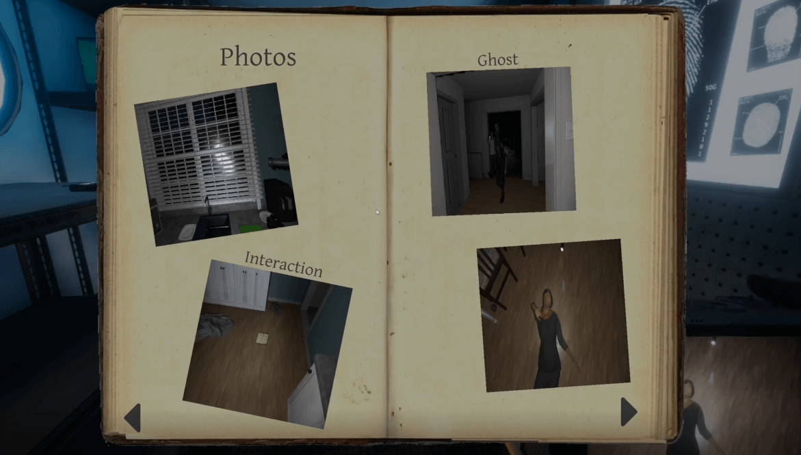

Phasmophobia
Evidence
Evidence is used to determine which Ghost is haunting the Location. Each ghost has a unique combination of three pieces of evidence that determines which ghost is present. Each player can record pieces of evidence that has been uncovered in the Journal to thin down the possible ghosts, and determine the ghost once all three piece of evidence are collected.
Pieces of Evidence
There are currently seven unique pieces of evidence in the game that can be used to identify a ghost:
- D.O.T.S Projector
- EMF Level 5
- Fingerprints
- Freezing Temperatures
- Ghost Orb
- Ghost Writing
- Spirit Box
Certain pairs of evidence cannot occur together.
- D.O.T.S Projector and Ghost Writing
- EMF Level 5 and Ghost Orb
- Freezing Temperatures and Spirit Box